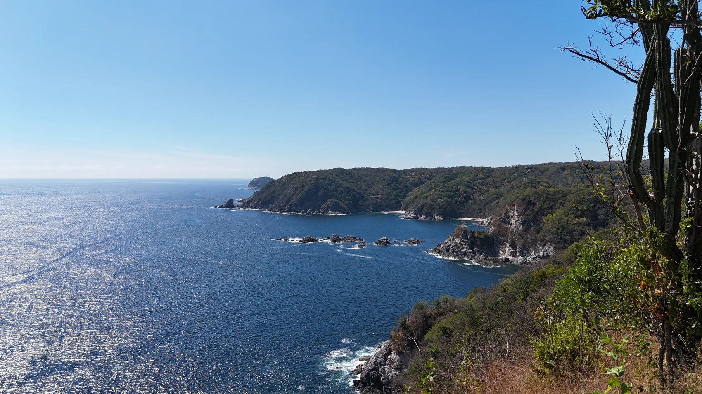
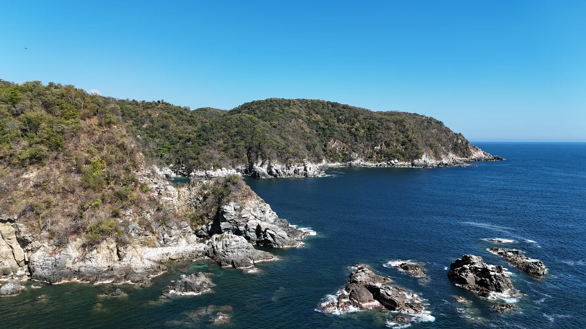
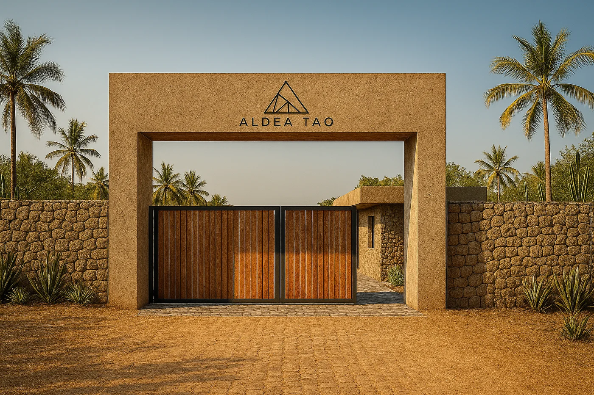
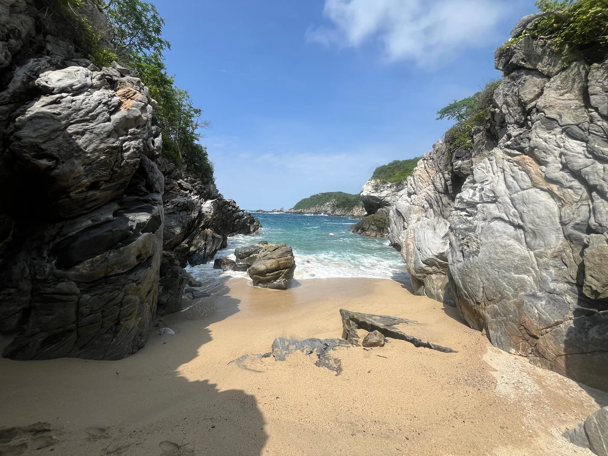
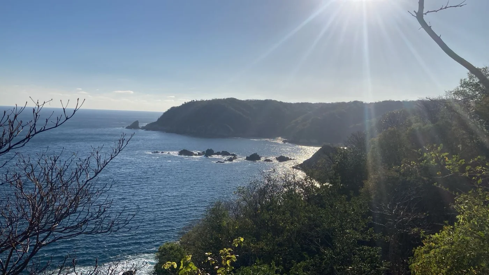
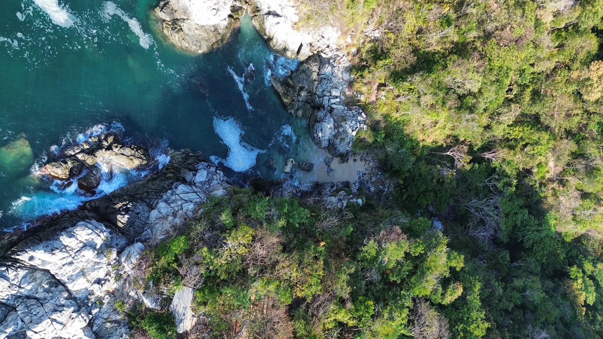

Costa de Oaxaca

Comunidad sobre los acantilados

Sobre los acantilados del Pacífico, donde el océano golpea las rocas volcánicas y el horizonte no termina, nace una comunidad única.
Construye tu casa frente al mar, con acceso a Playa Tololote y Playa La Boquilla — calas salvajes que no aparecen en los mapas.








Sobre rocas volcánicas frente al Pacífico, con calas salvajes que no aparecen en los mapas.
Privacidad total entre selva y mar abierto, para quienes buscan silencio de verdad.
Proyecto limitado por naturaleza: quedan los últimos lotes disponibles.
Sí. Tierra construye llave en mano adaptando la arquitectura a la topografía — Casa Yuu'Kee, en La Boquilla, es prueba de ello.
Sí. Todos nuestros proyectos incluyen acompañamiento legal completo y título de posesión en regla. Antes de firmar te explicamos cada documento, sin letra chica.
Sí, hay esquemas de enganche y mensualidades flexibles. Las condiciones exactas dependen del lote — un asesor te las confirma por WhatsApp.
¡Claro! Coordinamos tu visita por WhatsApp y te recibimos en la costa para que camines el terreno con nosotros.
Aldea Tao es un proyecto limitado. Solicita información y disponibilidad antes de que se agote.